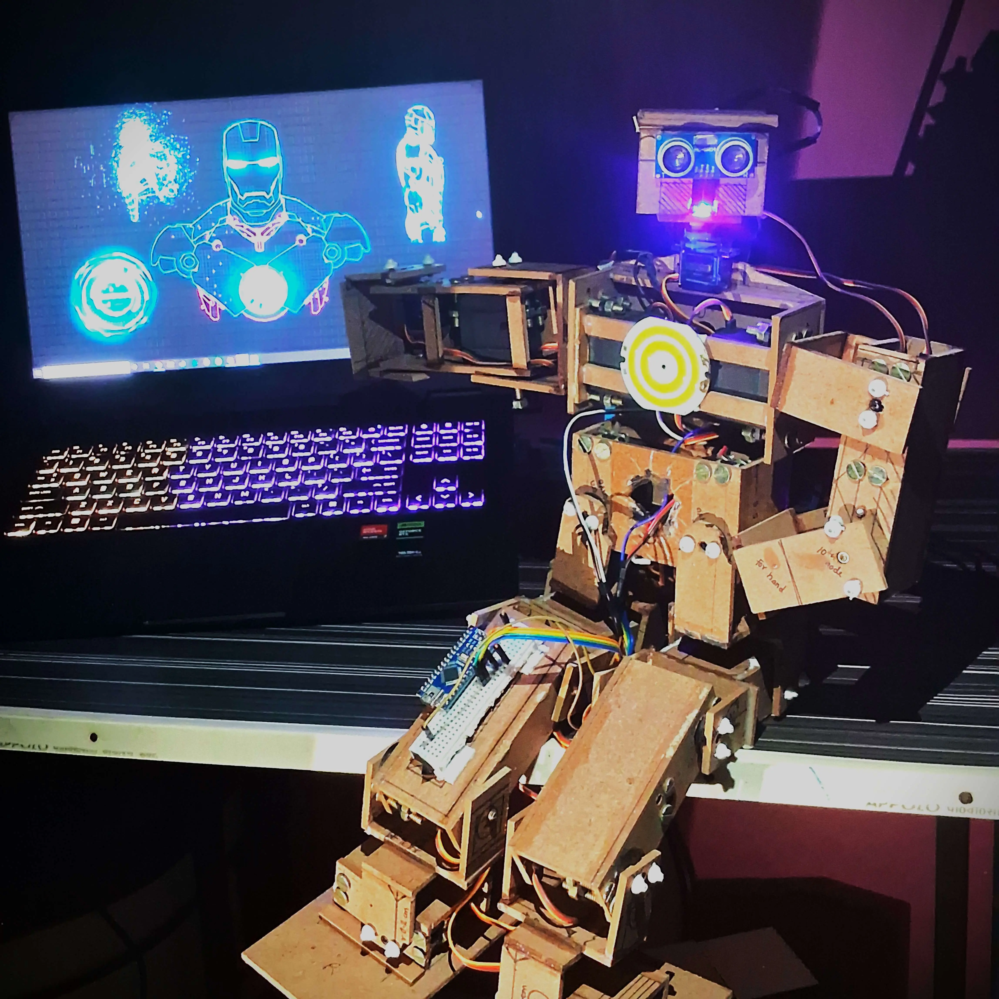
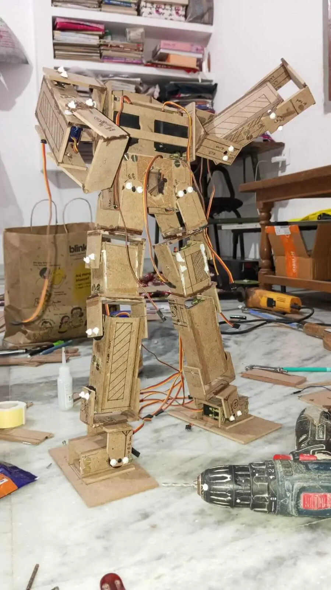

Introduction
During my first-year summer break, I embarked on an ambitious project to create PGNTA, a humanoid Arduino robot. This project was born out of a fascination with robotics and a desire to challenge myself in the fields of electronics, programming, and mechanical design. PGNTA, standing at 53 cm tall, represents my first foray into complex robotics and serves as a testament to what can be achieved with determination and a willingness to learn.
Project Overview
PGNTA is a 17 Degree of Freedom (DOF) humanoid robot powered by an ESP32 microcontroller. Built primarily from wooden plywood, it combines servo motors, sensors, and custom-designed joints to create a functional bipedal structure.
Key Features:
- 17 DOF using MG995 and SG90 servo motors
- ESP32 a microcontroller for main control
- Custom wooden plywood frame
- Ultrasonic sensor (HC-SR04) and (MPU6050) for balance and object detection
- Arduino Cloud integration for live data fetching
- Dimensions: 53 cm height, 25 cm length, 8 cm width
{kind=link}
{kind=link}
{kind=link}
{kind=link}
{kind=link}
Objectives:
- Design and build a functional humanoid robot using Arduino technology
- Gain practical experience in servo motor control and power management
- Explore challenges in balance and movement for bipedal structures
- Create a platform for future enhancements and learning in robotics
- Integrate sensors and cloud connectivity for advanced functionality
Development Process
1. Component Selection
The construction of PGNTA involved careful selection of components to balance functionality, cost, and availability. The key components included:
- Servo Motors: 14 MG995 A high-torque servos for major joints and 3 SG90 servos for less demanding movements
- Microcontroller: ESP 32 for main control
- Sensors: Ultrasonic sensor (HC-SR04) for object detection and MPU6050 for acceleration and gyroscopic data
- Additional electronics: PCA 9685 16-channel servo driver, Arduino Nano for interfacing with servo control software
{kind=link}
2. Structural Design
PGNTA's structure was primarily built using 3mm wooden plywood, chosen for its availability, ease of modification, and cost-effectiveness. The robot's frame consists of:
- Central body: 14x11 cm plywood housing core servos
- Limbs: Custom box-like structures using smaller plywood pieces
- Joints: C-shaped hinge joints created from plywood for flexibility
- Head: 6x3x5 cm cube-shaped structure housing sensors
The frame was constructed using the following techniques:
- Rectangular plywood pieces were cut and joined using adhesive
- Each servo was secured with four 2mm screws and nuts
- 7mm holes were drilled for servo horns
- Additional support was provided using nails on the opposite side of servo horns
3. Servo Configuration
The 17 servos were strategically placed to mimic human joint movements:
- Legs (10 servos): LL1-LL5 and RL1-RL5
- Arms (6 servos): LH1-LH3 and RH1-RH3
- Head (1 servo): For rotational movement
4. Power Management
Initial power supply using 9V batteries proved insufficient. The final solution involved:
- Six 18650 2000mAh 3.7V batteries
- Configuration: 2 parallel sets of 3 batteries in series
- Output: Approximately 11.5V with higher current capacity
- DC-DC Buck converter providing 5V output
5. Programming and Control
- Arduino IDE was used for programming
- PWM control implemented for servo movements
- Tim's Servo x16 Controller utilized for fine-tuning servo positions
- Integration with Arduino Cloud for remote monitoring and control
Circuit Documentation
ESP32 Version
This circuit manages precise servo motor movements using an Adafruit PCA9685 PWM Servo Breakout board, interfaced with an ESP32 microcontroller.
Component List:
- ESP32: Interfaces with the servo control software and manages PWM signals.
- 18650 Li-ion Batteries: Rechargeable batteries providing the power source.
- Adafruit PCA9685 PWM Servo Breakout: 16-channel, 12-bit PWM I2C-controlled servo driver.
- Servos: Actuators precisely controlled for position.
- Terminal PCB 2 Pin: Connectors for power supply.
- Electrolytic Capacitor: 25V 100μF capacitor for voltage smoothing.
- Ultrasonic Sensor (HC-SR04): For object detection.
- MPU6050: For acceleration and gyroscopic data.
- Circular LED: Connected to the ESP32 for visual indication.
Wiring Details:
(Detailed wiring information for ESP32, sensors, and servos)
Arduino Nano Version
This circuit is an alternative version using an Arduino Nano microcontroller.
Component List:
- Arduino Nano: Based on the ATmega328, interfacing with the servo control software.
- 18650 Li-ion Batteries: Rechargeable batteries providing the power source.
- Adafruit PCA9685 PWM Servo Breakout: 16-channel, 12-bit PWM I2C-controlled servo driver.
- Servos: Actuators precisely controlled for position.
- Terminal PCB 2 Pin: Connectors for power supply.
- Electrolytic Capacitor: 25V 100μF capacitor for voltage smoothing.
Wiring Details:
(Detailed wiring information for Arduino Nano, sensors, and servos)

Code
will be uploaded soon on my github account
Challenges & Solutions
Servo Movement Limitations:
Challenges : MG995 servos mechanically limited to 0-180 degrees
Solutions : Used Tim's Servo x16 Controller software to fine-tune servo positions and advanced Created preset configurations and scripts for movements-
Power Supply Issues
Challenge : Initial power supply (9V batteries) insufficient for high current draw
Solution : Switched to 18650 Li-ion batteries for higher current capacity Implemented a 2S3P configuration for balanced voltage and current -
Weight Management
Challenge : Excessive weight due to 3mm plywood frame
Solution : Future versions to consider lighter materials & Ongoing optimization of design for weight reduction -
Assembly Mistakes
Challenges : Servos joined to body without prior testing, restricting some motions
Solution : Learned importance of component testing before final assembly & Future iterations to include modular design for easier modifications -
Wiring and Connections
Challenge: Improper soldering of pins in PWM 9685 boards caused connection issues
Solutions : Re-soldered connections using 30-watt soldering iron & Gained hands-on soldering experience
Current Capabilities
- Arm movements: up, down, front
- Simple dance routines
- Basic gestures like waving "hi"
- Head movement with object detection
- Ardunio Cloud Integration for live data fetching
Future Improvements (Planned Phases)
Version 2
- Implement web-based control interface
- Enhance movement fluidity and range
Version 3
- Integrate ESP32-CAM module for image detection
- Implement real-time movement following human actions
Version 4
- Integrate AI API for advanced interactions
- Implement voice control and natural language processing